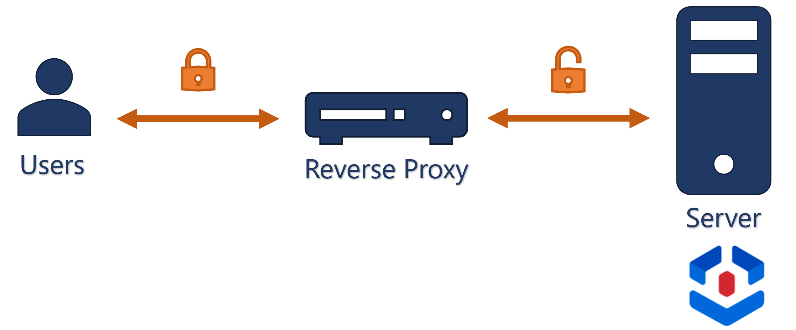
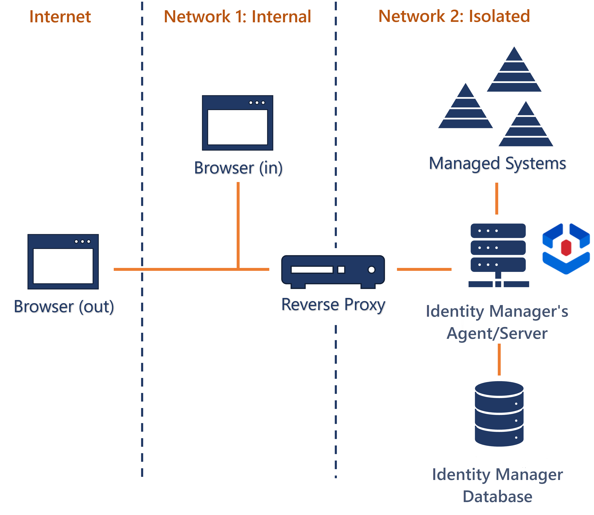
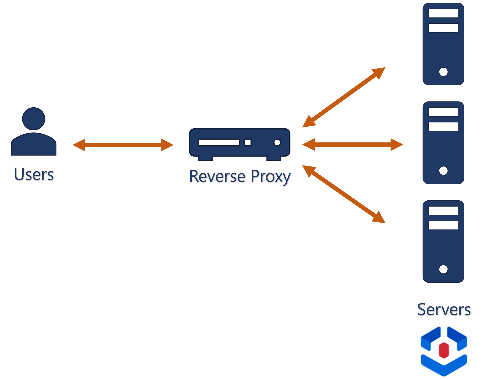

Reverse Proxy
Identity Manager can be installed behind a reverse proxy that acts as an intermediate server between users and Identity Manager's server, in order to process users' requests and redirect them to the right server(s), for performance and security purposes.
Overview
A reverse proxy is usually used when:
-
needing to encrypt the requests from/to end-users on the one hand, and on the other hand to be able to monitor plain text requests from/to Identity Manager's server;

-
installing Identity Manager with an integrated agent on a network isolated from the users' browsers, in order to be able to access sensitive systems which are protected by being set up on a network isolated from the Internet;

This installation will be used for the configuration examples below.
-
using several Identity Manager's server instances for load-balancing purposes.

As Identity Manager is session-less, working with several servers does not imply the need to synchronize sessions between servers, nor the need to guarantee that a particular IP will be processed by a particular server.
Nginx
For these tasks, nginx is a relevant choice of reverse proxy. There are several versions of nginx available, suitable for several Linux-based environments. Installation instructions can be found directly on the nginx website.
At its core, Identity Manager is an ASP.NET application with a Kestrel server. We can configure a nginx reverse proxy accordingly by following Microsoft's guidelines.
Nginx configuration files are usually located in /etc/nginx.
Load balancing
Nginx offers several load balancing methods which are all compatible with Identity Manager.
Then, in order for servers to be able to properly schedule and coordinate synchronization and provisioning, the following file locations must be shared by all Identity Manager servers:
- TempFolderPath
- WorkFolderPath
All Identity Manager servers also share a database. See the Application Settings topic for additional information.
Basic Configuration
The following is a basic configuration, in the nginx.conf file, with one virtual host, that directs incoming requests on <listening-port> from network 1 to a Identity Manager server instance at <Usercube-server-url> on network 2.
nginx.conf
worker_processes auto;
http {
##
# Basic Settings
##
sendfile on;
tcp_nopush on;
tcp_nodelay on;
keepalive_timeout 65;
types_hash_max_size 2048;
default_type application/octet-stream;
##
# SSL Settings
##
ssl_protocols TLSv1 TLSv1.1 TLSv1.2; # Dropping SSLv3, ref: POODLE
ssl_prefer_server_ciphers on;
##
# Logging Settings
##
access_log /nginx-1.19.7/logs/access.log;
error_log /nginx-1.19.7/logs/error.log;
##
# Gzip Settings
##
gzip on;
##
# Virtual Host Configs
##
server {
listen <listening-port> default_server;
server_name <server-name>;
location / {
proxy_pass http://<Usercube-server-url>;
proxy_http_version 1.1;
proxy_set_header Upgrade $http_upgrade;
proxy_set_header Connection keep-alive;
proxy_set_header Host $host;
proxy_cache_bypass $http_upgrade;
proxy_set_header X-Forwarded-For $proxy_add_x_forwarded_for;
proxy_set_header X-Forwarded-Proto $scheme;
proxy_set_header X-Real-IP $remote_addr;
}
}
}
Where:
<listening-port>is the port that nginx listens to on network 1 for incoming HTTP requests. It should be set to80, except if you have another web server listening for port 80 requests and passing them to your nginx server.<server-name>is the URL used by end-users to request Identity Manager's server, such ascontoso.usercube.com. It is the content of the host header in the incoming HTTP request.<Usercube-server-url>is Identity Manager's server URL on network 2.
With this configuration, SSL is enabled between the nginx proxy and the client, but not between the proxy and Identity Manager's server. gzip is used to compress files to be sent over the network.
Static files
Performance can be enhanced for static file serving. This requires extracting static files such as the UI JavaScript application and the logo and pictures, and storing them on the nginx server directly.See more information about static file serving with nginx.
Load Balancing Configuration
Load balancing involves at least two Identity Manager servers to which nginx, acting as a load balancer, distributes the load of incoming requests.
Then, in addition to the configuration from the previous example, a group of servers must be declared, using the upstream directive in the http section.
The following configuration defines a group named usercubegroup which contains two server configurations, each one resolving to an actual Identity Manager's server instance:
...
http {
upstream usercubegroup {
server usercube1.contoso.com;
server usercube2.contoso.com;
}
...
}
...
Then, the name of the group takes the place of <Usercube-server-url> in the virtual host definition:
server {
listen <listening-port> default_server;
server_name <server-name>;
location / {
proxy_pass http://IdentityManagergroup;
proxy_http_version 1.1;
proxy_set_header Upgrade $http_upgrade;
proxy_set_header Connection keep-alive;
proxy_set_header Host $host;
proxy_cache_bypass $http_upgrade;
proxy_set_header X-Forwarded-For $proxy_add_x_forwarded_for;
proxy_set_header X-Forwarded-Proto $scheme;
proxy_set_header X-Real-IP $remote_addr;
}
}